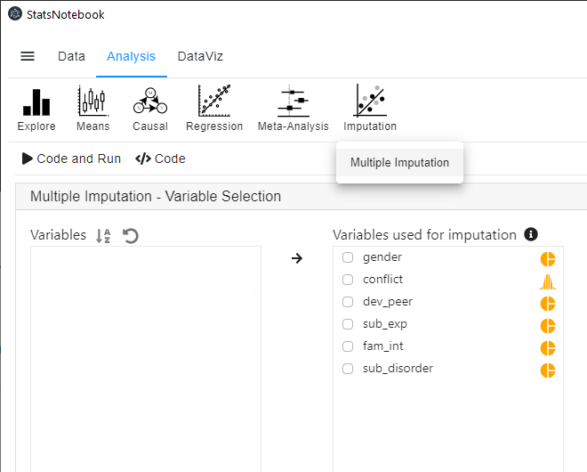
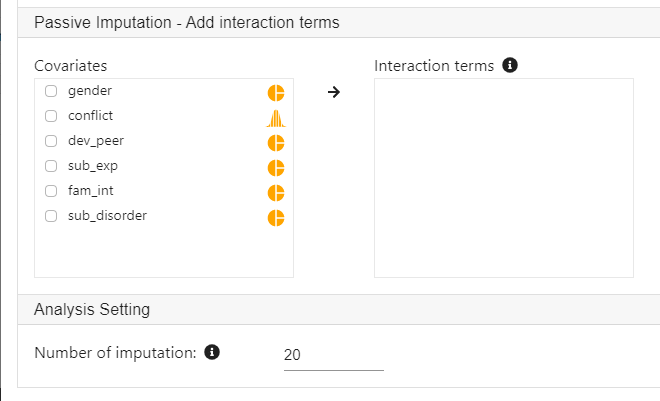
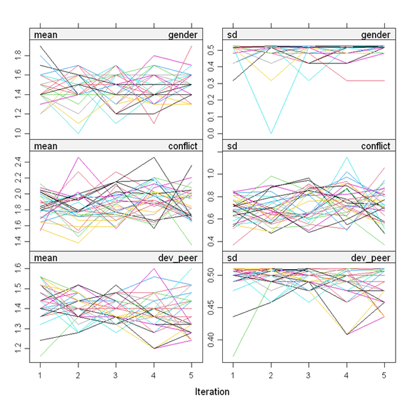

Missing data is a norm rather than an exception in most area of research. Excluding observations with missing data reduces statistical power and potentially introduces bias in model estimates. Multiple imputation is a technique that fills in missing value based on available data. It can increase statistical power and reduce bias due to missing data.
StatsNotebook provides a simple interface for multiple imputation using the mice package. By default, numeric variables are imputed using predictive mean matching and categorical variables are imputed using multinomial logistic regression (for categorical variables with 3 or more level) or binary logistic regression (for categorical variables with 2 levels).
In this tutorial, we will use the built-in substance dataset. This dataset can be loaded into StatsNotebook using instruction here. It is a simulated data on the effect of family intervention during adolescent on engagement of deviant peer group, experimentation with drugs and risk of substance use disorder in young adulthood. See Causal Mediaion Analysis for an example based on this dataset.
In this dataset,
Prior to imputing missing data, all categorical variables need to be specified as categorical (i.e. factor variable in R). See this for instructions to convert variable type .
To impute missing data,


The only output from StatsNotebook is a set of diagnostic plots from the imputation model. The lines in all plots should be freely intermingled. Non-covergence will be indicated by clearly separated lines.

The following is the codes generated by StatsNotebook.
library(mice)
formulas <- make.formulas(currentDataset)
formulas$gender =gender ~ conflict + dev_peer + sub_exp + fam_int + sub_disorder
formulas$conflict =conflict ~ gender + dev_peer + sub_exp + fam_int + sub_disorder
formulas$dev_peer =dev_peer ~ gender + conflict + sub_exp + fam_int + sub_disorder
formulas$sub_exp =sub_exp ~ gender + conflict + dev_peer + fam_int + sub_disorder
formulas$fam_int =fam_int ~ gender + conflict + dev_peer + sub_exp + sub_disorder
formulas$sub_disorder =sub_disorder ~ gender + conflict + dev_peer + sub_exp + fam_int
meth <- make.method(currentDataset)
imputedDataset <- parlmice(currentDataset,
method = meth,
formulas = formulas,
m = 20,
n.core = 15,
n.imp.core = 2)
plot(imputedDataset)
currentDataset <- complete(imputedDataset, action = "long", include = TRUE)
"Chan, G. and StatsNotebook Team (2020). StatsNotebook. (Version 0.1.0) [Computer Software]. Retrieved from https://www.statsnotebook.io"
"R Core Team (2020). The R Project for Statistical Computing. [Computer software]. Retrieved from https://r-project.org"
"Buuren, S. v. and K. Groothuis-Oudshoorn (2010). mice: Multivariate imputation by chained equations in R. Journal of Statistical Software: 1-68."
The top section specifies how each variable is imputed. StatsNotebook will use all selected variables for imputation.
formulas <- make.formulas(currentDataset)
formulas$gender =gender ~ conflict + dev_peer + sub_exp + fam_int + sub_disorder
formulas$conflict =conflict ~ gender + dev_peer + sub_exp + fam_int + sub_disorder
formulas$dev_peer =dev_peer ~ gender + conflict + sub_exp + fam_int + sub_disorder
formulas$sub_exp =sub_exp ~ gender + conflict + dev_peer + fam_int + sub_disorder
formulas$fam_int =fam_int ~ gender + conflict + dev_peer + sub_exp + sub_disorder
formulas$sub_disorder =sub_disorder ~ gender + conflict + dev_peer + sub_exp + fam_int
meth <- make.method(currentDataset)
After the setup, the function parlmice will be used to impute missing data.
imputedDataset <- parlmice(currentDataset,
method = meth,
formulas = formulas,
m = 20,
n.core = 15,
n.imp.core = 2)
Chan, G. and StatsNotebook Team (2020). StatsNotebook. (Version 0.1.0) [Computer Software]. Retrieved from https://www.statsnotebook.io
R Core Team (2020). The R Project for Statistical Computing. [Computer software]. Retrieved from https://r-project.org
Buuren, S. v. and K. Groothuis-Oudshoorn (2010). mice: Multivariate imputation by chained equations in R. Journal of Statistical Software: 1-68.